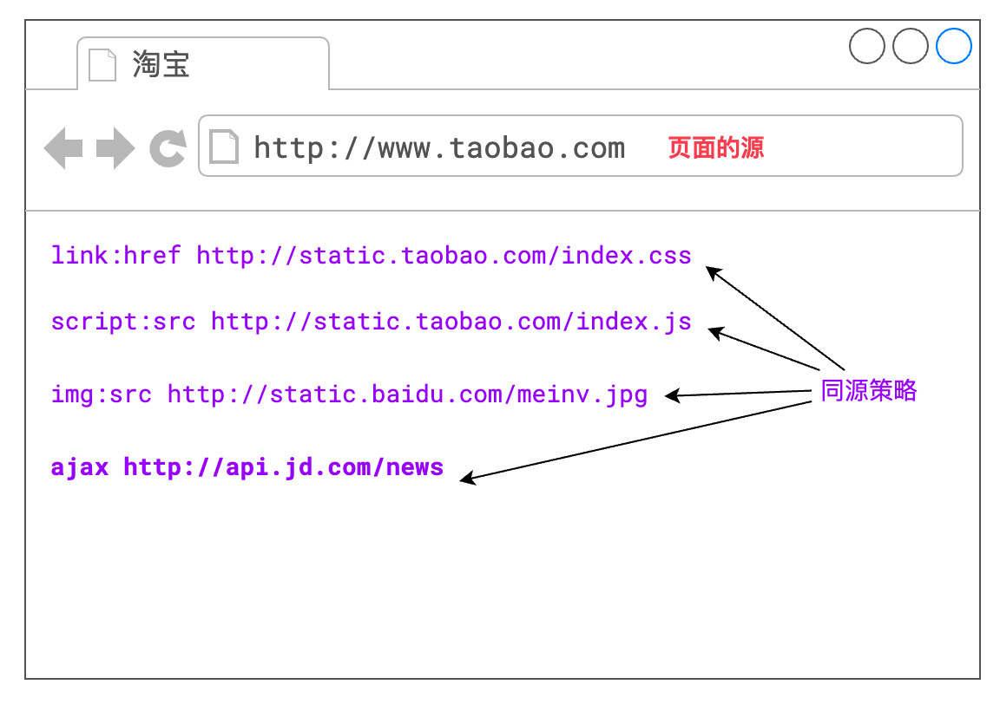
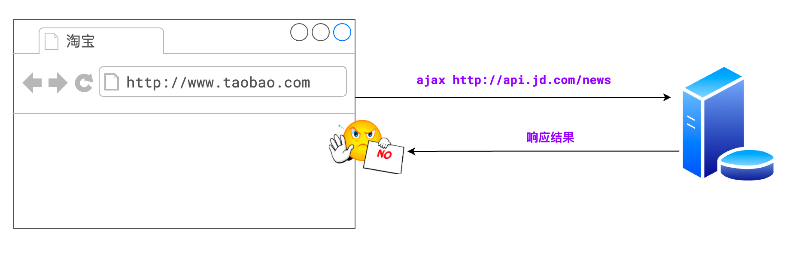
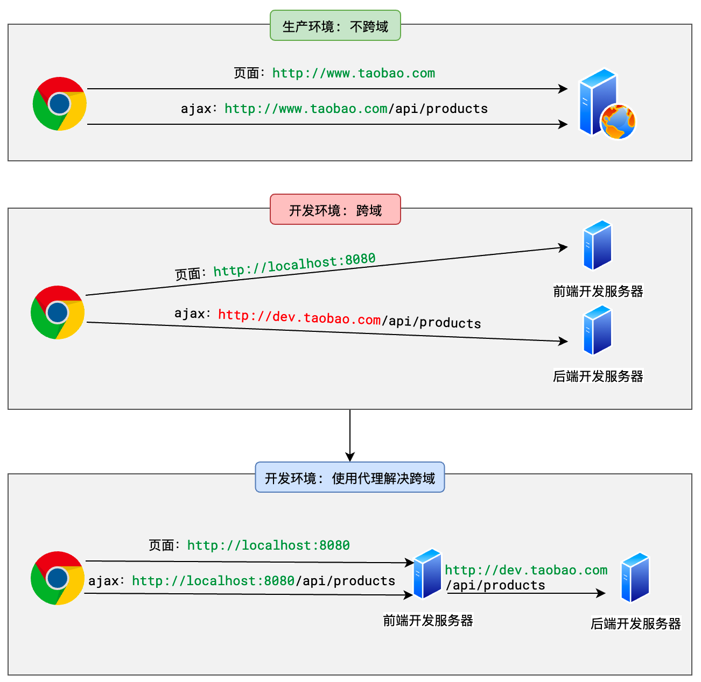
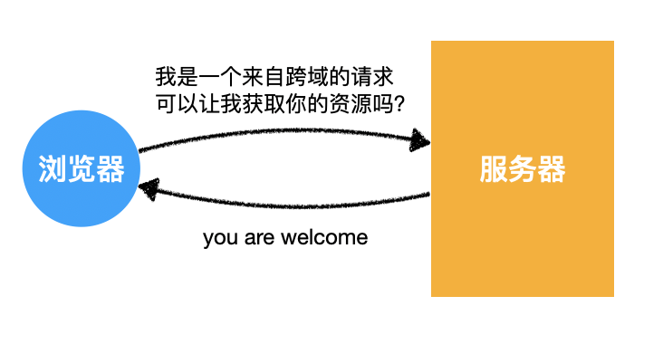
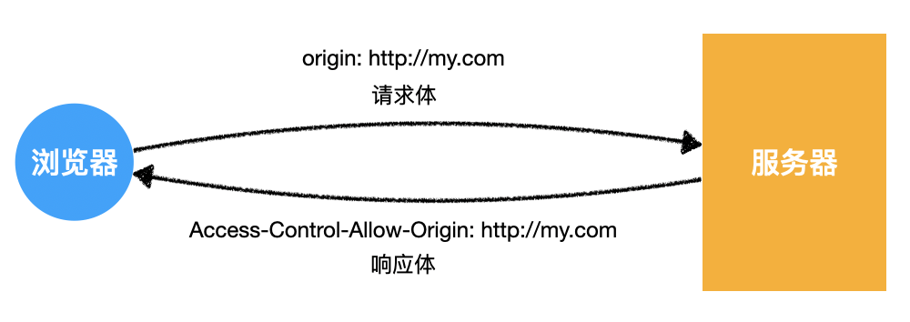
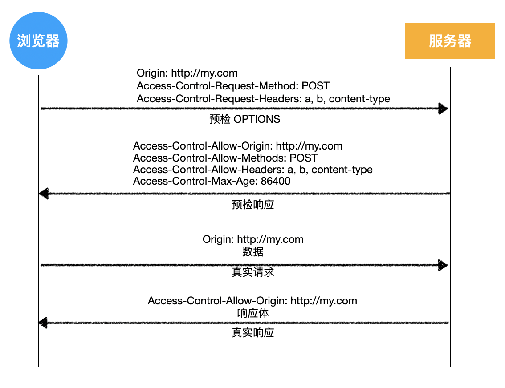
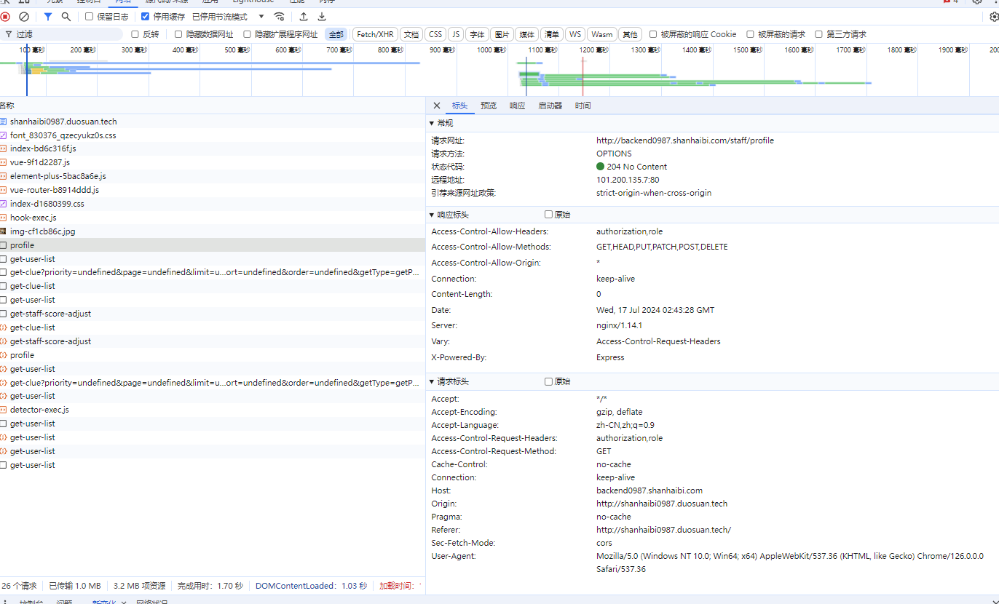
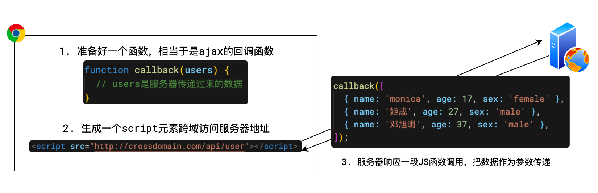

同源策略
浏览器有一个重要的安全策略，称之为「同源策略」
其中，源=协议+主机+端口。两个源相同，称之为同源，两个源不同，称之为跨源或跨域
同源策略是指，若页面的源和页面运行过程中加载的源不一致时，出于安全考虑，浏览器会对跨域的资源访问进行一些限制

同源策略对 ajax 的跨域限制的最为凶狠，默认情况下，它不允许 ajax 访问跨域资源

同源策略种类
- DOM 同源策略：禁止对不同源页面 DOM 进行操作。这里主要场景是 iframe 跨域的情况，不同域名的 iframe 是限制互相访问的。
- XMLHttpRequest 同源策略：禁止使用 XHR 对象向不同源的服务器地址发起 HTTP 请求。（ajax 请求)
- Cookie、LocalStorage、IndexedDB 等存储性内容
为什么要有同源策略
如果没有 DOM 同源策略，也就是说不同域的 iframe 之间可以相互访问，那么黑客可以这样进行攻击：
- 做一个假网站，里面用 iframe 嵌套一个银行网站 http://mybank.com。
- 把 iframe 宽高啥的调整到页面全部，这样用户进来除了域名，别的部分和银行的网站没有任何差别。
- 这时如果用户输入账号密码，我们的主网站可以跨域访问到 http://mybank.com 的 dom 节点，就可以拿到用户的账户密码了。
如果没有 XMLHttpRequest 同源策略，那么黑客可以进行 CSRF（跨站请求伪造） 攻击：
- 用户登录了自己的银行页面 http://mybank.com，http://mybank.com 向用户的 cookie 中添加用户标识。
- 用户浏览了恶意页面 http://evil.com，执行了页面中的恶意 AJAX 请求代码。
- http://evil.com 向 http://mybank.com 发起 AJAX HTTP 请求，请求会默认把 http://mybank.com 对应 cookie 也同时发送过去。
- 银行页面从发送的 cookie 中提取用户标识，验证用户无误，response 中返回请求数据。此时数据就泄露了。
- 而且由于 Ajax 在后台执行，用户无法感知这一过程。
拦截
如果没设置允许跨域，那么 Postman 可以请求到数据吗？
拦截只是浏览器行为，用 postman 可以正常访问（即使服务器没有设置运行跨域）
如果是浏览器的预检请求 后端不会参与运行代码
如果是非预检请求，服务器会响应，只是浏览器进行了拦截（被拦截是浏览器的行为，但服务器会执行所请求的方法，也会将数据返回出去）
解决跨域
浏览器会拦截不是同源的请求，服务器是照常发的(跨域限制是浏览器的行为)
有多种方式解决跨域问题，常见的有：
- 代理，常用
- CORS，常用
- JSONP
无论使用哪一种方式，都是要让浏览器知道，我这次跨域请求的是自己人，就不要拦截了。
代理
代理适用的场景是：生产环境不发生跨域，但开发环境发生跨域
对于前端开发而言，大部分的跨域问题，都是通过代理解决的
因此，只需要在开发环境使用代理解决跨域即可，这种代理又称之为开发代理

在实际开发中，只需要对开发服务器稍加配置即可完成
// vue 的开发服务器代理配置
// vue.config.js
module.exports = {
devServer: {
// 配置开发服务器
proxy: {
// 配置代理
"/api": {
// 若请求路径以 /api 开头
target: "http://dev.taobao.com", // 将其转发到 http://dev.taobao.com
},
},
},
};
CORS
<font style="color:rgb(37, 41, 51);">CORS</font>是基于<font style="color:rgb(37, 41, 51);">http1.1</font>的一种跨域解决方案，它的全称是Cross-Origin Resource Sharing，跨域资源共享。
它的总体思路是：如果浏览器要跨域访问服务器的资源，需要获得服务器的允许

要知道，一个请求可以附带很多信息，从而会对服务器造成不同程度的影响
比如有的请求只是获取一些新闻，有的请求会改动服务器的数据
针对不同的请求，CORS 规定了三种不同的交互模式，分别是：
- 简单请求
- 需要预检的请求
- 附带身份凭证的请求
这三种模式从上到下层层递进，请求可以做的事越来越多，要求也越来越严格。
简单请求
当浏览器端运行了一段 ajax 代码（无论是使用 XMLHttpRequest 还是 fetch api），浏览器会首先判断它属于哪一种请求模式
简单请求的判定
当请求同时满足以下条件时，浏览器会认为它是一个简单请求：
- 请求方法属于下面的一种：
- get
- post
- head
- 请求头仅包含安全的字段，常见的安全字段如下：
<font style="color:rgb(37, 41, 51);">Accept</font><font style="color:rgb(37, 41, 51);">Accept-Language</font><font style="color:rgb(37, 41, 51);">Content-Language</font><font style="color:rgb(37, 41, 51);">Content-Type</font><font style="color:rgb(37, 41, 51);">DPR</font><font style="color:rgb(37, 41, 51);">Downlink</font><font style="color:rgb(37, 41, 51);">Save-Data</font><font style="color:rgb(37, 41, 51);">Viewport-Width</font><font style="color:rgb(37, 41, 51);">Width</font>
- 请求头如果包含
**Content-Type**，仅限下面的值之一：<font style="color:rgb(37, 41, 51);">text/plain</font><font style="color:rgb(37, 41, 51);">multipart/form-data</font><font style="color:rgb(37, 41, 51);">application/x-www-form-urlencoded</font>
如果以上三个条件同时满足，浏览器判定为简单请求。
下面是一些例子：
// 简单请求
fetch("http://crossdomain.com/api/news");
// 请求方法不满足要求，不是简单请求
fetch("http://crossdomain.com/api/news", {
method: "PUT",
});
// 加入了额外的请求头，不是简单请求
fetch("http://crossdomain.com/api/news", {
headers: {
a: 1,
},
});
// 简单请求
fetch("http://crossdomain.com/api/news", {
method: "post",
});
// content-type不满足要求，不是简单请求
fetch("http://crossdomain.com/api/news", {
method: "post",
headers: {
"content-type": "application/json",
},
});
简单请求的交互规范
当浏览器判定某个ajax 跨域请求是简单请求时，会发生以下的事情
- 请求头中会自动添加
**Origin**字段
比如，在页面<font style="color:rgb(37, 41, 51);">http://my.com/index.html</font>中有以下代码造成了跨域
// 简单请求
fetch("http://crossdomain.com/api/news");
请求发出后，请求头会是下面的格式：
GET /api/news/ HTTP/1.1
Host: crossdomain.com
Connection: keep-alive
...
Referer: http://my.com/index.html
Origin: http://my.com
<font style="color:rgb(37, 41, 51);">Origin</font>字段会告诉服务器，是哪个源地址在跨域请求
- 服务器响应头中应包含
**Access-Control-Allow-Origin**
当服务器收到请求后，如果允许该请求跨域访问，需要在响应头中添加<font style="color:rgb(37, 41, 51);">Access-Control-Allow-Origin</font>字段
该字段的值可以是：
- *：表示我很开放，什么人我都允许访问
- 具体的源：比如
<font style="color:rgb(37, 41, 51);">http://my.com</font>，表示我就允许你访问
实际上，这两个值对于客户端
<font style="color:rgb(37, 41, 51);">http://my.com</font>而言，都一样，因为客户端才不会管其他源服务器允不允许，就关心自己是否被允许当然，服务器也可以维护一个可被允许的源列表，如果请求的
<font style="color:rgb(37, 41, 51);">Origin</font>命中该列表，才响应<font style="color:rgb(37, 41, 51);">*</font>或具体的源为了避免后续的麻烦，强烈推荐响应具体的源
假设服务器做出了以下的响应：
HTTP/1.1 200 OK
Date: Tue, 21 Apr 2020 08:03:35 GMT
...
Access-Control-Allow-Origin: http://my.com
...
消息体中的数据
当浏览器看到服务器允许自己访问后，高兴的像一个两百斤的孩子，于是，它就把响应顺利的交给 js，以完成后续的操作
下图简述了整个交互过程

需要预检的请求
简单的请求对服务器的威胁不大，所以允许使用上述的简单交互即可完成。
但是，如果浏览器不认为这是一种简单请求，就会按照下面的流程进行：
- 浏览器发送预检请求，询问服务器是否允许
- 服务器允许
- 浏览器发送真实请求
- 服务器完成真实的响应
比如，在页面<font style="color:rgb(37, 41, 51);">http://my.com/index.html</font>中有以下代码造成了跨域
// 需要预检的请求
fetch("http://crossdomain.com/api/user", {
method: "POST", // post 请求
headers: {
// 设置请求头
a: 1,
b: 2,
"content-type": "application/json",
},
body: JSON.stringify({ name: "袁小进", age: 18 }), // 设置请求体
});
浏览器发现它不是一个简单请求，则会按照下面的流程与服务器交互
- 浏览器发送预检请求，询问服务器是否允许
OPTIONS /api/user HTTP/1.1
Host: crossdomain.com
...
Origin: http://my.com
Access-Control-Request-Method: POST
Access-Control-Request-Headers: a, b, content-type
可以看出，这并非我们想要发出的真实请求，请求中不包含我们的请求头，也没有消息体。
这是一个预检请求，它的目的是询问服务器，是否允许后续的真实请求。
预检请求没有请求体，它包含了后续真实请求要做的事情
预检请求有以下特征：
- 请求方法为
<font style="color:rgb(37, 41, 51);">OPTIONS</font> - 没有请求体
- 请求头中包含
<font style="color:rgb(37, 41, 51);">Origin</font>：请求的源，和简单请求的含义一致<font style="color:rgb(37, 41, 51);">Access-Control-Request-Method</font>：后续的真实请求将使用的请求方法<font style="color:rgb(37, 41, 51);">Access-Control-Request-Headers</font>：后续的真实请求会改动的请求头
- 服务器允许
服务器收到预检请求后，可以检查预检请求中包含的信息，如果允许这样的请求，需要响应下面的消息格式
HTTP/1.1 200 OK
Date: Tue, 21 Apr 2020 08:03:35 GMT
...
Access-Control-Allow-Origin: http://my.com
Access-Control-Allow-Methods: POST
Access-Control-Allow-Headers: a, b, content-type
Access-Control-Max-Age: 86400
...
对于预检请求，不需要响应任何的消息体，只需要在响应头中添加：
<font style="color:rgb(37, 41, 51);">Access-Control-Allow-Origin</font>：和简单请求一样，表示允许的源<font style="color:rgb(37, 41, 51);">Access-Control-Allow-Methods</font>：表示允许的后续真实的请求方法<font style="color:rgb(37, 41, 51);">Access-Control-Allow-Headers</font>：表示允许改动的请求头<font style="color:rgb(37, 41, 51);">Access-Control-Max-Age</font>：告诉浏览器，多少秒内，对于同样的请求源、方法、头，都不需要再发送预检请求了
- 浏览器发送真实请求
预检被服务器允许后，浏览器就会发送真实请求了，上面的代码会发生下面的请求数据
POST /api/user HTTP/1.1
Host: crossdomain.com
Connection: keep-alive
...
Referer: http://my.com/index.html
Origin: http://my.com
{"name": "袁小进", "age": 18 }
- 服务器响应真实请求
HTTP/1.1 200 OK
Date: Tue, 21 Apr 2020 08:03:35 GMT
...
Access-Control-Allow-Origin: http://my.com
...
添加用户成功
可以看出，当完成预检之后，后续的处理与简单请求相同
下图简述了整个交互过程


204 预检请求
预检请求（Preflight Request）通常会返回一个 204 No Content 响应。这是因为预检请求是由浏览器发起的一种 CORS（跨源资源共享）请求，用来检查实际请求是否安全可接受。如果服务器允许实际请求，它会在预检请求的响应中设置适当的 CORS 头部，并返回 204 状态码，表示响应成功但不包含任何内容。
附带身份凭证的请求(携带 cookie)
默认情况下，ajax 的跨域请求并不会附带 cookie，这样一来，某些需要权限的操作就无法进行
不过可以通过简单的配置就可以实现附带 cookie
// xhr
var xhr = new XMLHttpRequest();
xhr.withCredentials = true;
// fetch api
fetch(url, {
credentials: "include",
});
这样一来，该跨域的 ajax 请求就是一个附带身份凭证的请求
当一个请求需要附带 cookie 时，无论它是简单请求，还是预检请求，都会在请求头中添加<font style="color:rgb(37, 41, 51);">cookie</font>字段
而服务器响应时，需要明确告知客户端：服务器允许这样的凭据
告知的方式也非常的简单，只需要在响应头中添加：<font style="color:rgb(37, 41, 51);">Access-Control-Allow-Credentials: true</font>即可
对于一个附带身份凭证的请求，若服务器没有明确告知，浏览器仍然视为跨域被拒绝。
另外要特别注意的是：**对于附带身份凭证的请求，服务器不得设置 ****Access-Control-Allow-Origin 的值为***。这就是为什么不推荐使用*的原因
一个额外的补充
在跨域访问时，JS 只能拿到一些最基本的响应头，如：Cache-Control、Content-Language、Content-Type、Expires、Last-Modified、Pragma
如果要访问其他头，则需要服务器设置本响应头。
<font style="color:rgb(37, 41, 51);">Access-Control-Expose-Headers</font>头让服务器把允许浏览器访问的头放入白名单，例如：
Access-Control-Expose-Headers: authorization, a, b
这样 JS 就能够访问指定的响应头了。
JSONP
在 CORS 出现之前，人们想了一种奇妙的办法来实现跨域，这就是 JSONP。
要实现 JSONP，需要浏览器和服务器来一个天衣无缝的绝妙配合。
JSONP 的做法是：当需要跨域请求时，不使用 AJAX，转而生成一个 script 元素去请求服务器，由于浏览器并不阻止 script 元素的请求，这样请求可以到达服务器。服务器拿到请求后，响应一段 JS 代码，这段代码实际上是一个函数调用，调用的是客户端预先生成好的函数，并把浏览器需要的数据作为参数传递到函数中，从而间接的把数据传递给客户端

JSONP 有着明显的缺点，即其只能支持 GET 请求
服务器
const express = require('express');
const app = express();
const path = '/api/user';
const users = [
{ name: 'monica', age: 17, sex: 'female' },
{ name: '姬成', age: 27, sex: 'male' },
{ name: '邓旭明', age: 37, sex: 'male' },
];
app.get(path, (req, res) => {
res.setHeader('content-type', 'text/javascript');
res.send(`callback(${JSON.stringify(users)})`);
});
const port = 8000;
app.listen(port, () => {
console.log(`server listen on ${port}`);
console.log(`request for users: http://localhost:${port}${path}`);
});
浏览器
<script>
ajax传过来的数据导致刚好去执行callback函数
function callback(resp) {
console.log(resp);
}
function request(url) {
const script = document.createElement('script');
script.src = url;
script.onload = function () {
script.remove();
};
document.body.appendChild(script);
}
document.querySelector('button').onclick = function () {
request('http://localhost:8000/api/user');
};
</script>